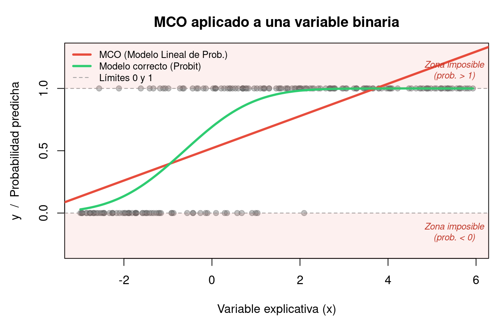

Code
set.seed(2026)
n <- 200
x <- runif(n, -3, 6)
p_real <- pnorm(0.5 + 0.8 * x) # probabilidad real (probit)
y <- rbinom(n, 1, p_real)
## Estimamos con MCO (Modelo Lineal de Probabilidad)
mlp <- lm(y ~ x)
## Gráfico
par(mar = c(4.5, 4.5, 3, 1))
plot(x, y, pch = 19, col = adjustcolor("gray40", alpha = 0.4),
xlab = "Variable explicativa (x)", ylab = "y / Probabilidad predicha",
main = "MCO aplicado a una variable binaria", ylim = c(-0.3, 1.3))
abline(mlp, col = "#E74C3C", lwd = 3)
abline(h = c(0, 1), lty = 2, col = "gray60")
x_ord <- sort(x)
lines(x_ord, pnorm(0.5 + 0.8 * x_ord), col = "#2ECC71", lwd = 3, lty = 1)
rect(-4, -0.5, 8, 0, col = adjustcolor("#E74C3C", alpha = 0.08), border = NA)
rect(-4, 1, 8, 1.5, col = adjustcolor("#E74C3C", alpha = 0.08), border = NA)
text(5.5, -0.15, "Zona imposible\n(prob. < 0)", col = "#C0392B", cex = 0.75, font = 3)
text(5.5, 1.15, "Zona imposible\n(prob. > 1)", col = "#C0392B", cex = 0.75, font = 3)
legend("topleft",
legend = c("MCO (Modelo Lineal de Prob.)", "Modelo correcto (Probit)",
"Límites 0 y 1"),
col = c("#E74C3C", "#2ECC71", "gray60"),
lwd = c(3, 3, 1), lty = c(1, 1, 2), bty = "n", cex = 0.8)